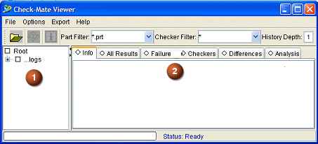

使用 Check—Mate 查看器用户界面来查看测试结果。
Check—Mate 查看器用户界面中有两个主面板。

显示 Check—Mate 日志文件路径的树将在左侧窗格中显示。此树形结构中的条目与使用设置搜索文件夹选项输入以作为搜索目录的目录对应。根目录下的每个条目对应于包含 Check—Mate 日志文件的一个搜索路径。
结果区域显示有关选定日志文件内容的汇总和详细信息。
Check—Mate 查看器结果区域中包含 6 个选项卡，用于控制显示的信息内容：
信息 — 包括有关选定日志文件集的汇总信息。这些汇总信息包括在日志文件中找到的部件数、检查器测试运行总数以及错误数的计数。
所有结果 — 包含两个区域。上方区域为树形结构，显示已检查的每个部件以及针对部件文件运行的所有检查器规则。下方区域部分包含有关选定部件或检查器测试的详细信息。
要显示下方窗口区域，在根列表中选择一个部件或检查，然后右击并选择细节。
失败 — 显示与所有结果选项卡相同的基本信息，但不显示仅筛选至返回错误状态的部件文件和测试的数据过滤器。
检查器 — 显示按检查器而非按部件排序的结果信息。在树形结构下，条目分为通过、信息、警告和失败测试四组。给定测试可在多个标头下列出。
区别 — 显示任何从上次运行到当前结果存在状态更改的测试的汇总。
分析 — 执行某些数据基本汇总分析，并在表格中呈现信息。分析信息包括失败率最高的检查以及通过率最高的检查。